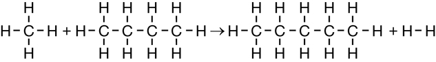
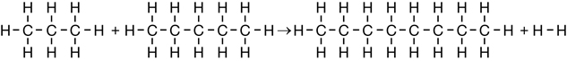
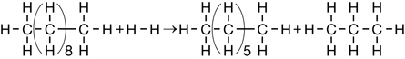
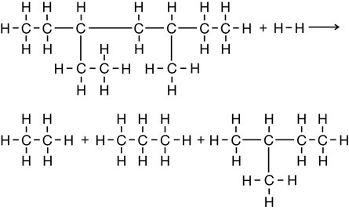
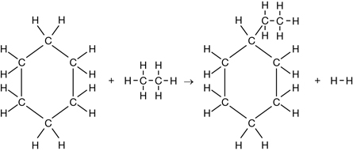
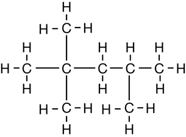
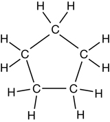
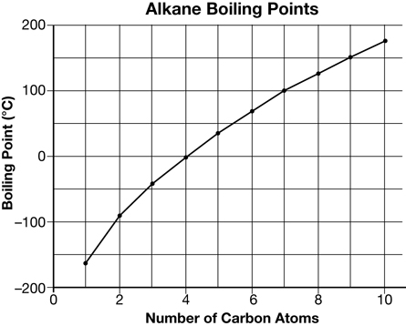

Module 5—Hydrocarbons and the Petroleum Industry
 Self-Check Answers
Self-Check Answers
Contact your teacher if your answers vary significantly from the answers provided here.
SC 5.
Section 9.2 1.
Methane, ethane, propane, butane, pentanes, and hexanes are typically
present in natural gas before it is refined. Natural gas for home
heating is almost pure methane because the other components have been
removed.
Section 9.2 2.
Sour natural gas contains hydrogen sulfide; sweet natural gas does not.
Hydrogen sulfide is a deadly toxin and poses a major safety problem if
it is not safely removed.
Section 9.2 3.
To remove alkanes (other than methane) from natural gas, the natural
gas is cooled under high pressure so that the alkanes with more than
one carbon atom condense to a liquid.
Section 9.2 4.
- Two consumer uses for the energy obtained from natural gas are:
(1) residential heating and (2) fueling barbecues and campstoves.
Two commercial uses for the energy obtained from natural gas are: (1) fueling some taxicabs and (2) heating office buildings.
Two industrial uses for the energy obtained from natural gas are: (1) fueling some power plants that produce electricity and (2) separating bitumen from oil sand.
- Production of plastic objects, wooden objects, building materials, and paper products require energy from natural gas.
Section 9.2 5.
-

-

-

-

-

Section 9.2 6.
- 3–ethylpentane
- 2,2,3 –trimethylbutane
- 4 –ethyl –2,4 –dimethylhexane
- 3 –methyl –5 –propyloctane
While the numbers are unnecessary, it is acceptable if you named (a) as 3 –ethylpentane and (b) as 2,2,3 –trimethylbutane.
Section 9.2 7.
- propane + pentane → octane + hydrogen
- hexane → 2,2 dimethylbutane

The names are 2,3 –dimethylbutane and 2 –methylpentane. You may also have used methylpentane as one isomer.
Section 9.2 8.
- 2 C8H18
+ 25 O2 → 16 CO2
+ 18 H2O

-
C5H12 + 8 O2 → 5 CO2 + 6 H2O
(methylbutane)
-
2 C5H10 + 15 O2 → 10 CO2 + 10 H2O

(cyclopentane)
Section 9.2 9.
Economic: Developing petroleum resources can be valuable as petroleum
is a valuable commodity.
Political: The oil industry is a major employer, so the government encourages exploration and development.
Militaristic: Having a secure supply of oil is vitally important in warfare.
Section 9.2 10.
- 
The data points on the graph have been connected with straight lines because the function is non-continuous.
The boiling point is directly proportional to the number of carbon atoms in the alkane. The relationship is almost linear. This is because the London forces become stronger with the increasing number of electrons, and the number of electrons increases by eight with each successive alkane.
-
Methane is used for home heating. Methane is easy to deliver by pipeline.
Ethane is used to make polyethylene. Polyethylene is readily available from natural gas.
Propane is used as a barbecue fuel. Propane is easily condensed with pressure for storage in a tank.
Butane is used as a propellant in aerosol sprays. Butane vapourizes when the pressure is released on the aerosol container’s contents.
Pentane is used as a solvent. It dissolves most nonpolar organic compounds.
Hexane is used as a component of gasoline. Hexane burns well.
Heptane is used as an organic solvent. Heptane is easy to store and transport.
Octane is a component of gasoline. Branched octanes have high octane numbers.
Nonane and decane are components of diesel fuel; they are not too volatile and they burn well.
You may have identified other uses, especially for the smaller alkanes.